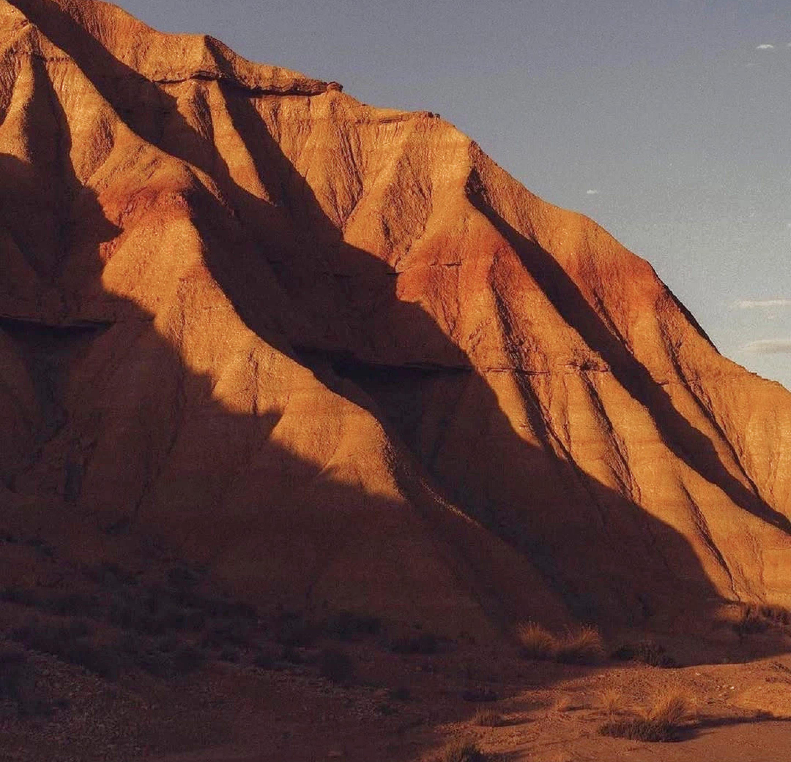
01.
akjshdqwe dfsdfsdfg
akjshdqwe dfsdfsdfg
02.
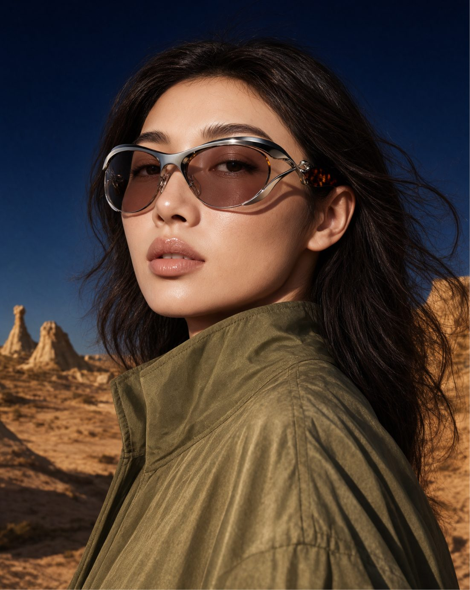
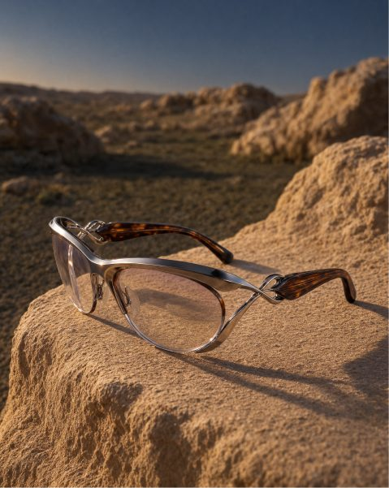
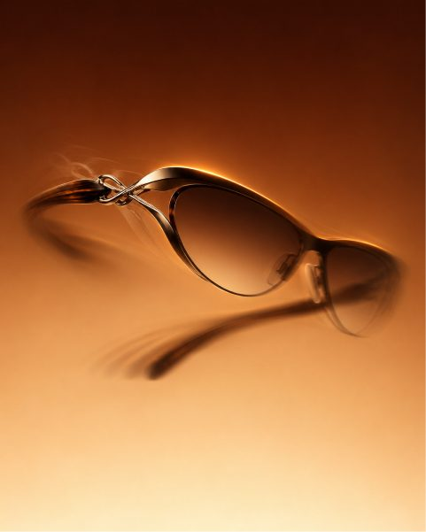
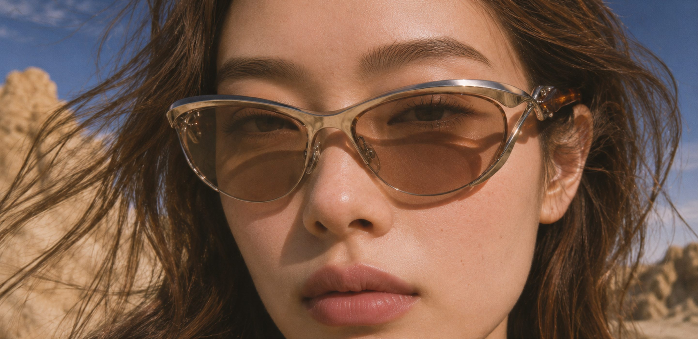
안경과 자연
자연
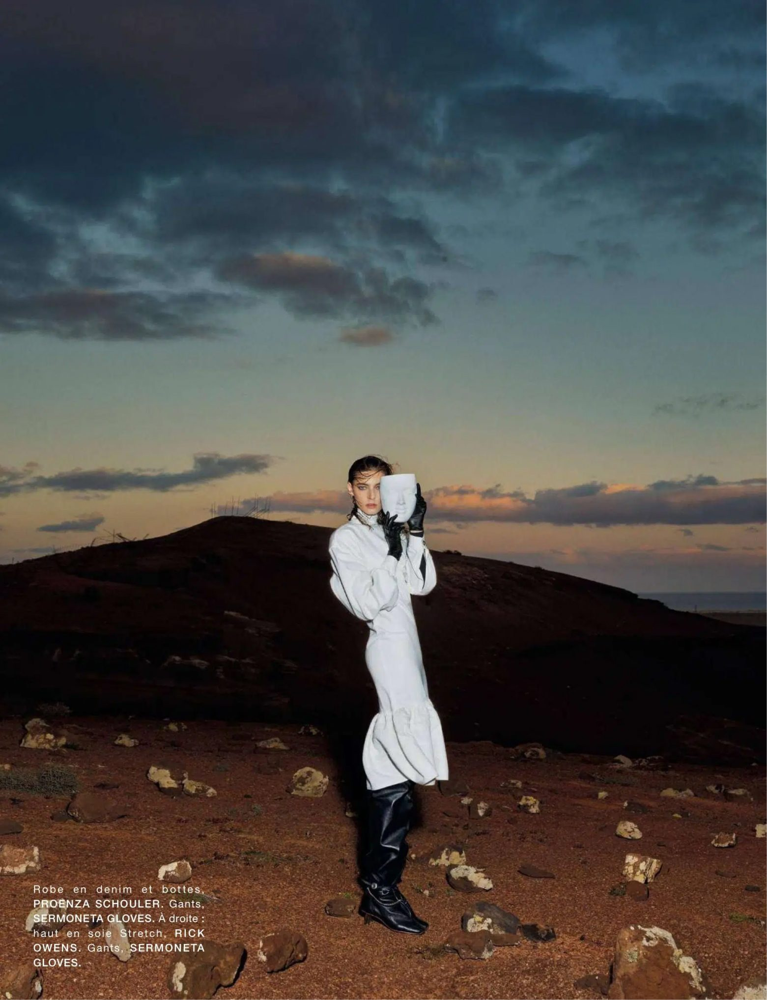
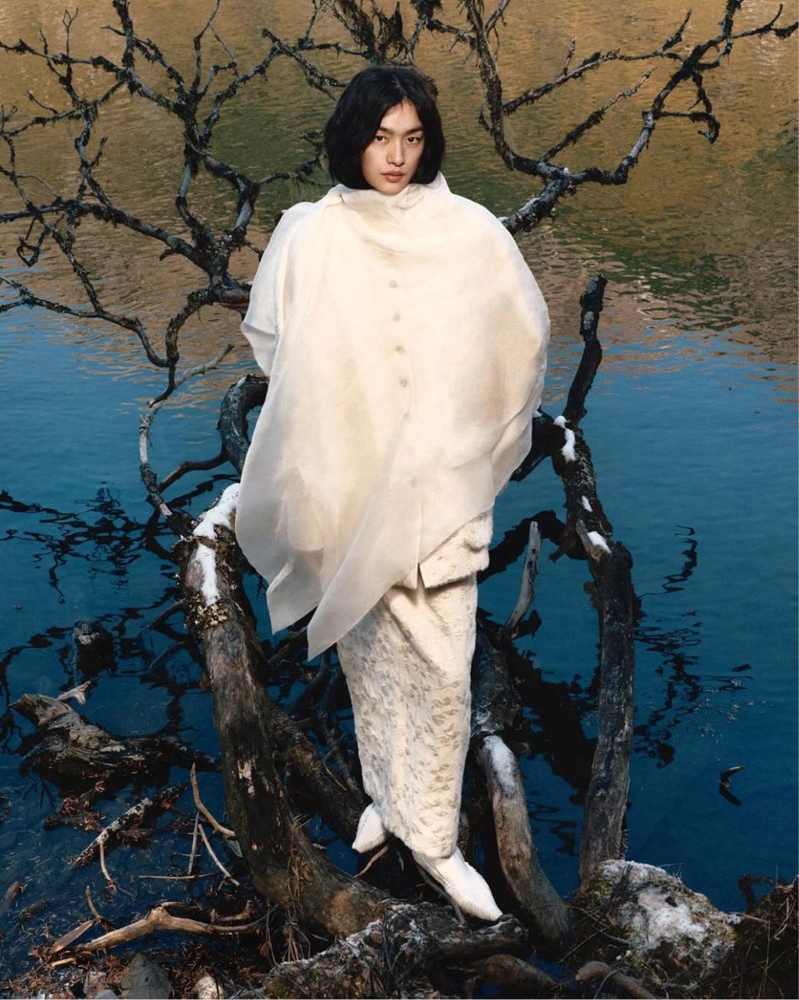
드론 들고 떠있는거
akdfgfgaklfhasadf jhdjfierfgsdfgdfgfg askjfhsadfjhdjfierfgsdffg
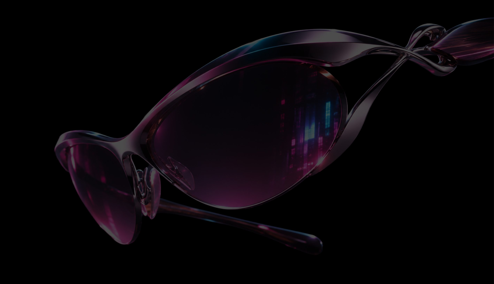
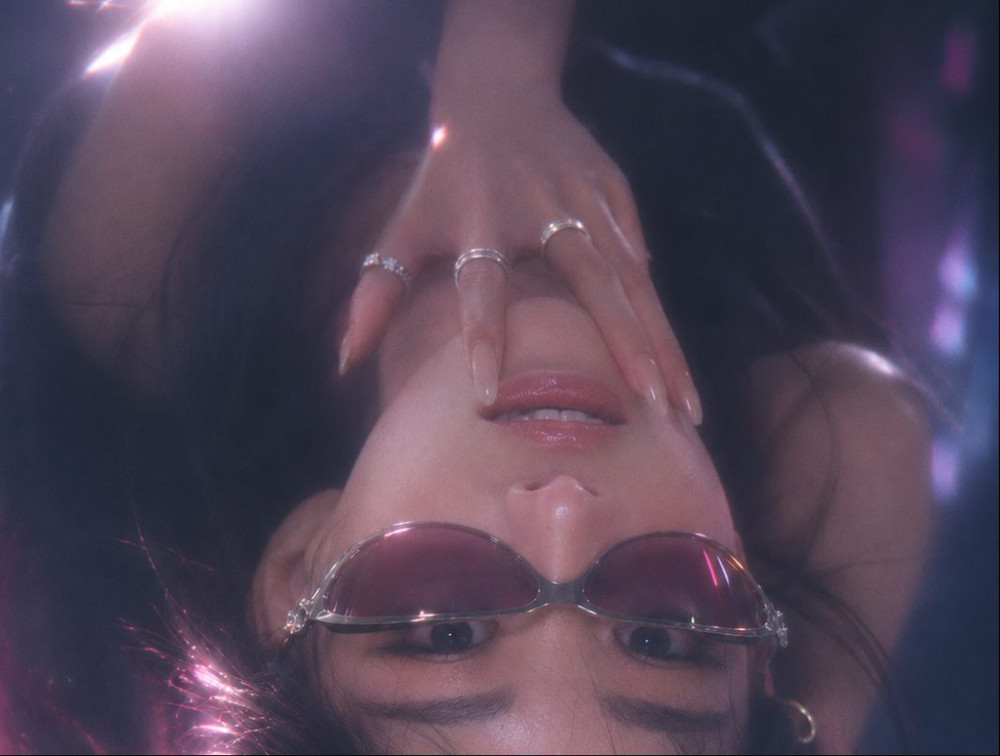
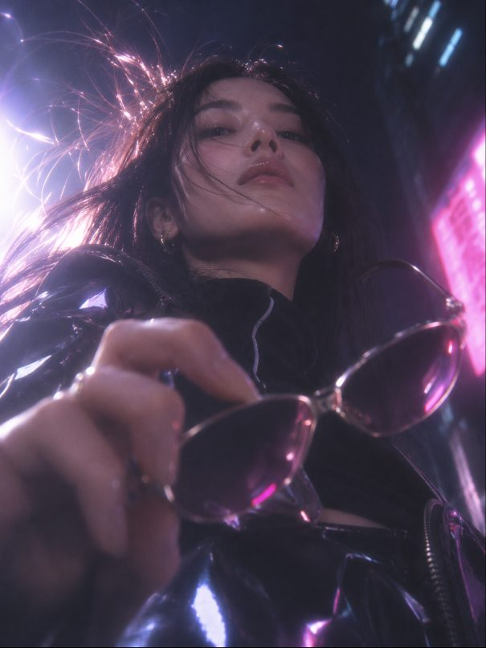
aklfhaskjfhsadfjhdjfierfgsdfgsdfgdfgfg aklfhaskjfhsadfjhdjfierfgsdgsdfgdfgfg sadfjhdjfierfgsdfgsdfgdfgfg aklfhaskjfhsadfjhdjfierfgsdffgdfgfg aklfhaskjfhsadfjhdjfierfgsdfgsdfgdfgfg aklfhaskjfhsadfrfgsdgsdfgdfgfg
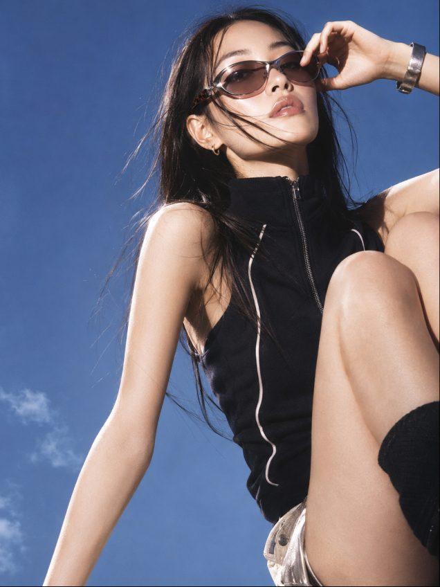
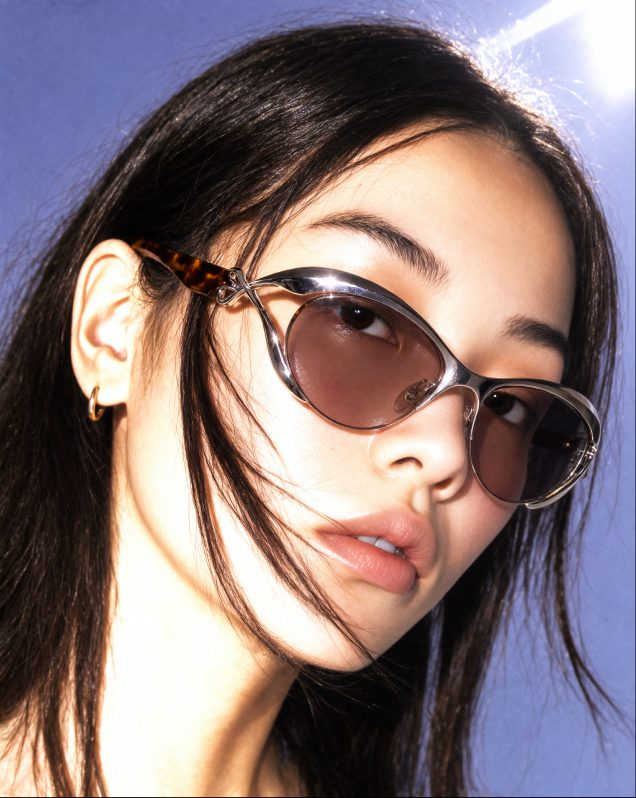
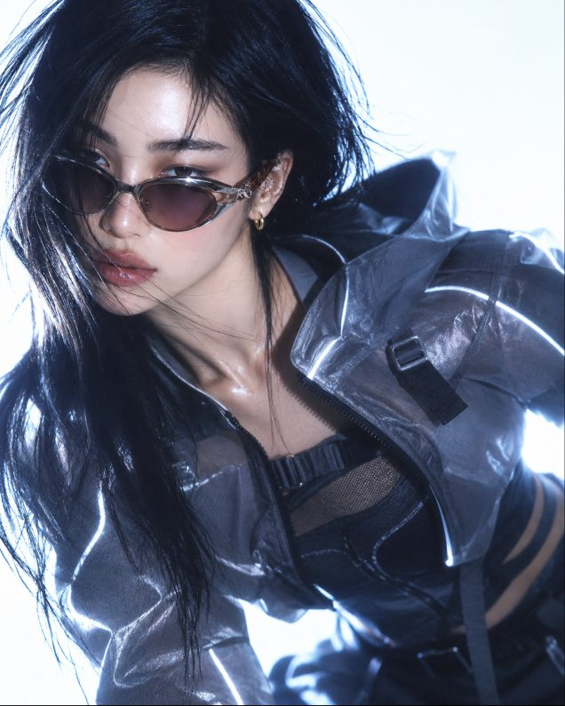
akjshdqwe dfsdfsdfgadsfsadf asdfffffffffffsdfsfsdf qfhjfjrtreteryuyu akjshdqwe dfsdfsdfgadsfsadf asdfffffffffffsdfsfsdf qfhjfjrtreteryuyu akjshdqwe dfsdfsdfgadsfsadf asdfffffffffffsdfsfsdf qfhjfjrtreteryuyu akjshdqwe dfsdfsdfgadsfsadf asdfffffffffffsdfsfsdf qfhjfjrtreteryuyu
akjshdqwe dfsdfsdfgadsfsadf asdfffffffffffsdfsfsdf qfhjfjrtreteryuyu akjshdqwe dfsdfsdfgadsfsadf asdfffffffffffsdfsfsdf qfhjfjrtreteryuyu akjshdqwe dfsdfsdfgadsfsadf asdfffffffffffsdfsfsdf qfhjfjrtreteryuyu akjshdqwe dfsdfsdfgadsfsadf asdfffffffffffsdfsfsdf qfhjfjrtreteryuyu